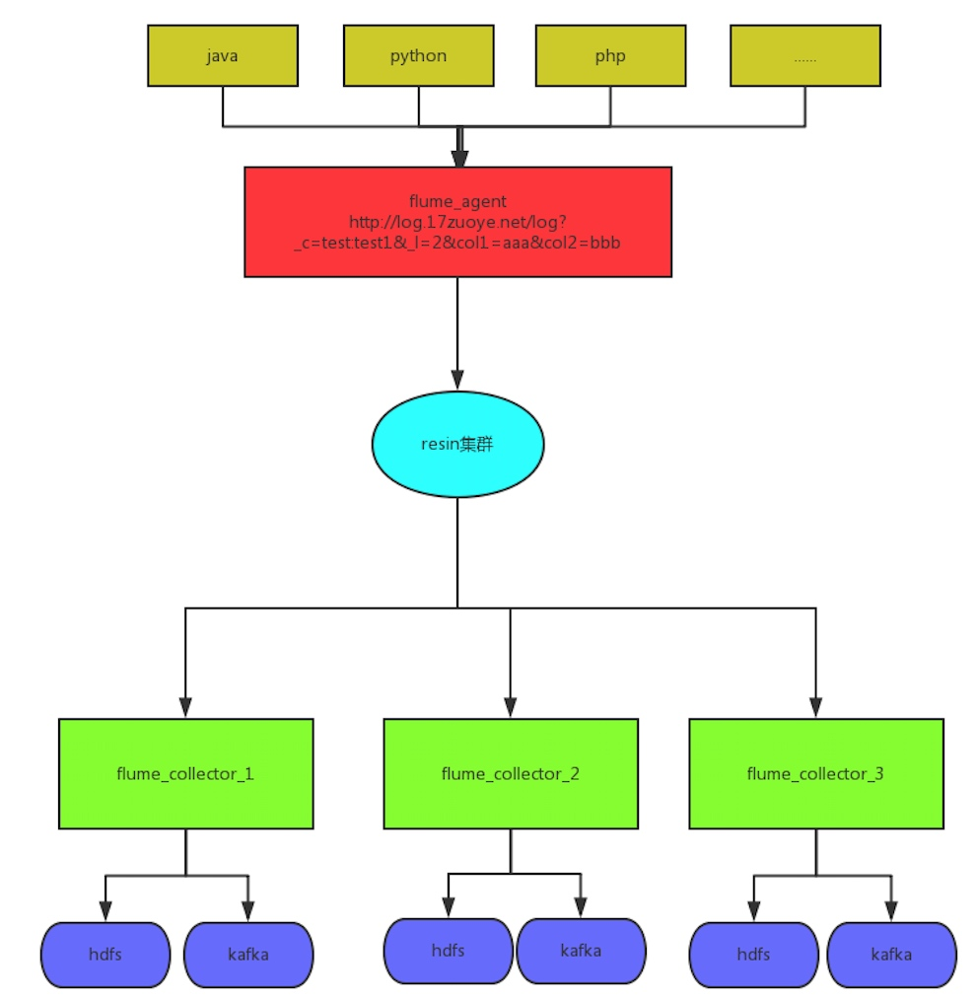

日志收集系统整体架构如下图：

- 整个系统分为三层：Agent层，Collector和Store层。其中agent层部署在三台机器，并通过resion集群进行均衡负载。外界通过调用API，将日志传入给agent，agent负责收集外界所有日志。collector层在部署在三台服务器（共22个节点），负责收集agent传输过来的日志，并将日志持久化到hdfs，发送到kafka消息队列，供storm使用
- agent到collector使用LoadBalance策略，将日志均衡的发送到所有的collector上，达到负载均衡的目的
store层，hdfs负责持久化存储消息，供离线分析使用。kafka 则给storm提供实时计算流
在agent的实际部署中，部署程序在xx1，xx2,xx3分别一套。 xxx,xxx agent中收集的数据将会均衡负载到xx1,xx2的collector上， 而114上agent收集到的日志将只会分发给114上的collector
flume详情配置
安装位置：
```
/home/flume/flume
```
10.0.x.xxx 供八个节点 10.0.x.xxx 8个节点 10.0.x.xxx 6个节点
配置详解：
# Name the components on this agent
agent1.sources = source1
agent1.sinks = hdfssink1 kafkasink
agent1.channels = hdfschannel kafkachannel
# Describe/configure the source
#avro source 将通过嵌入式客户端生产数据
agent1.sources.source1.type = avro
agent1.sources.source1.channels = hdfschannel kafkachannel
agent1.sources.source1.bind = 0.0.0.0
agent1.sources.source1.port = 41414
agent1.sources.source1.interceptors = i1
agent1.sources.source1.interceptors.i1.type = org.apache.flume.interceptor.TimestampInterceptor$Builder
# Use sinkgroups
# use SPILLABLEMEMORY channel for HDFS
agent1.channels.hdfschannel.type = SPILLABLEMEMORY
#内存channel中存储的event的最大数量
agent1.channels.hdfschannel.memoryCapacity = 50000
#用于设置file channel的容量，
agent1.channels.hdfschannel.overflowCapacity = 5000000
#slot数量，默认是JVM可使用的最大物理内存(可通过配置 "byteCapacity"参数来控制物理内存使用 )的#80% * (1 - byteCapacityBufferPercentage * .01 )) / avgEventSize得来；
agent1.channels.hdfschannel.byteCapacity = 1000000
agent1.channels.hdfschannel.checkpointDir = /data/flume/data1/flume1/checkpoint1
agent1.channels.hdfschannel.dataDirs = /data/flume/data1/flume1/data1
#Max size (in bytes) of a single log file
agent1.channels.hdfschannel.maxFileSize = 1073741824
#use kafkachannel for kafka
#SPILLABLEMEMORY 内存通道，并且写file
agent1.channels.kafkachannel.type = SPILLABLEMEMORY
agent1.channels.kafkachannel.memoryCapacity = 50000
agent1.channels.kafkachannel.overflowCapacity = 5000000
agent1.channels.kafkachannel.byteCapacity = 1000000
agent1.channels.kafkachannel.checkpointDir = /data/flume/data1/kafka/checkpoint1
agent1.channels.kafkachannel.dataDirs = /data/flume/data1/kafka/data1
agent1.channels.kafkachannel.maxFileSize = 1073741824
agent1.sinks.hdfssink1.type = hdfs
# db,table 等信息在header中加入
agent1.sinks.hdfssink1.hdfs.path = hdfs://BJ-DB-150:8020/storage/logs/%{db}/%{table}/dt=%{date}/hour=%{hour}
agent1.sinks.hdfssink1.hdfs.filePrefix = %{table}_158_agent1
agent1.sinks.hdfssink1.hdfs.writeFormat = Text
agent1.sinks.hdfssink1.hdfs.fileType = DataStream
agent1.sinks.hdfssink1.hdfs.rollSize = 130000000
agent1.sinks.hdfssink1.hdfs.batchSize = 10000
agent1.sinks.hdfssink1.hdfs.rollCount = 0
agent1.sinks.hdfssink1.hdfs.rollInterval = 3600
agent1.sinks.hdfssink1.hdfs.threadsPoolSize=15
agent1.sinks.hdfssink1.hdfs.callTimeout=60000
agent1.sinks.hdfssink1.hdfs.idleTimeout=300
agent1.sinks.hdfssink1.channel = hdfschannel
# config the kafka sink
agent1.sinks.kafkasink.type = org.apache.flume.sink.kafka.KafkaSink
agent1.sinks.kafkasink.topic = default.topic
#发送kafka地址
agent1.sinks.kafkasink.brokerList = 10.0.1.xx1:9099,10.0.1.xx2:9099,10.0.1.xx4:9099,10.0.1.xx3:9099
agent1.sinks.kafkasink.requiredAcks = 1
agent1.sinks.kafkasink.batchSize = 2000
#自定义partition
agent1.sinks.kafkasink.kafka.partitioner.class=com.i7zuoye.plugin.MessagePartition
agent1.sinks.kafkasink.kafka.producer.type=sync
#agent1.sinks.kafkasink.kafka.serializer.class=kafka.serializer.StringEncoder
agent1.sinks.kafkasink.channel = kafkachannel
plugin位置
/home/flume/flume/lib/kafka-util.jar
flume启动方式：
nohup bin/flume-ng agent -c conf -f conf/flume_hdfs_online1.conf -n agent1 &
resion启动方式
sh /home/flume/resin-flume-server/conf/start-resin.sh agent1
嵌入式agent程序部署位置：
/home/flume/deploy_web/agentxx_web